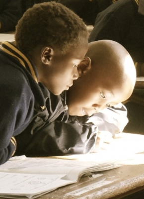
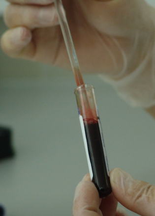
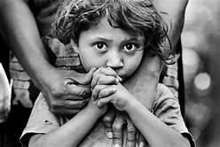
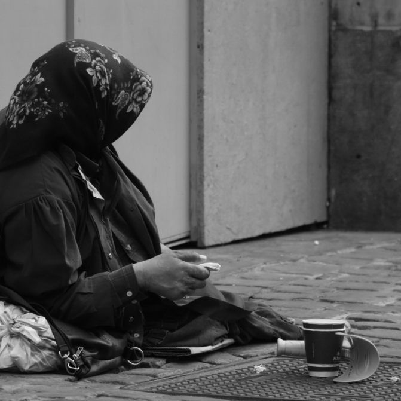

Everyone Deserves a better Life to live
|  |  |
WHAT WE DOChild Care foundation is a growing foundation to combat poverty expand opportunity for all people in South Africa and Africa at large. Child Care foundation focus in Africa issue that demands immediate action and achievable result in the field of Health/Hiv and Aids, Education, Agriculture, Community development and Sport, giving scholars to underprivileged within our resources. Child Care’s Aid enables the African’s poorest people to gain access to food security, drinking water, health, education, micro credit program, and provides a small grants to local communities to contribute to the sustainable humanitarian development programs in local communities. |
“Let’s all unite to create a better world without
compromising the next generation. ”
To visibly improve the lives
|
 |
“Let’s all unite to create a better world without
compromising the next generation. ”
|  |
To combact Poverty and
|